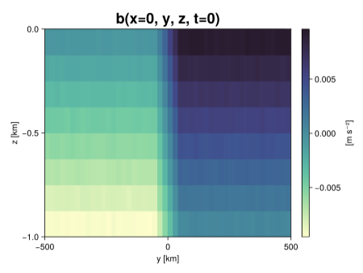
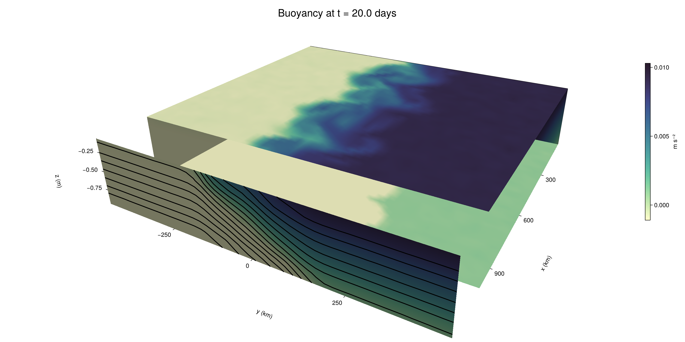

Baroclinic adjustment
In this example, we simulate the evolution and equilibration of a baroclinically unstable front.
Install dependencies
First let's make sure we have all required packages installed.
using Pkg
pkg"add Oceananigans, CairoMakie"using Oceananigans
using Oceananigans.UnitsGrid
We use a three-dimensional channel that is periodic in the x direction:
Lx = 1000kilometers # east-west extent [m]
Ly = 1000kilometers # north-south extent [m]
Lz = 1kilometers # depth [m]
grid = RectilinearGrid(size = (48, 48, 8),
x = (0, Lx),
y = (-Ly/2, Ly/2),
z = (-Lz, 0),
topology = (Periodic, Bounded, Bounded))48×48×8 RectilinearGrid{Float64, Periodic, Bounded, Bounded} on CPU with 3×3×3 halo
├── Periodic x ∈ [0.0, 1.0e6) regularly spaced with Δx=20833.3
├── Bounded y ∈ [-500000.0, 500000.0] regularly spaced with Δy=20833.3
└── Bounded z ∈ [-1000.0, 0.0] regularly spaced with Δz=125.0Model
We built a HydrostaticFreeSurfaceModel with an ImplicitFreeSurface solver. Regarding Coriolis, we use a beta-plane centered at 45° South.
model = HydrostaticFreeSurfaceModel(; grid,
coriolis = BetaPlane(latitude = -45),
buoyancy = BuoyancyTracer(),
tracers = :b,
momentum_advection = WENO(),
tracer_advection = WENO())HydrostaticFreeSurfaceModel{CPU, RectilinearGrid}(time = 0 seconds, iteration = 0)
├── grid: 48×48×8 RectilinearGrid{Float64, Periodic, Bounded, Bounded} on CPU with 3×3×3 halo
├── timestepper: QuasiAdamsBashforth2TimeStepper
├── tracers: b
├── closure: Nothing
├── buoyancy: BuoyancyTracer with ĝ = NegativeZDirection()
├── free surface: ImplicitFreeSurface with gravitational acceleration 9.80665 m s⁻²
│ └── solver: FFTImplicitFreeSurfaceSolver
├── advection scheme:
│ ├── momentum: WENO reconstruction order 5
│ └── b: WENO reconstruction order 5
└── coriolis: BetaPlane{Float64}We start our simulation from rest with a baroclinically unstable buoyancy distribution. We use ramp(y, Δy), defined below, to specify a front with width Δy and horizontal buoyancy gradient M². We impose the front on top of a vertical buoyancy gradient N² and a bit of noise.
"""
ramp(y, Δy)
Linear ramp from 0 to 1 between -Δy/2 and +Δy/2.
For example:
```
y < -Δy/2 => ramp = 0
-Δy/2 < y < -Δy/2 => ramp = y / Δy
y > Δy/2 => ramp = 1
```
"""
ramp(y, Δy) = min(max(0, y/Δy + 1/2), 1)
N² = 1e-5 # [s⁻²] buoyancy frequency / stratification
M² = 1e-7 # [s⁻²] horizontal buoyancy gradient
Δy = 100kilometers # width of the region of the front
Δb = Δy * M² # buoyancy jump associated with the front
ϵb = 1e-2 * Δb # noise amplitude
bᵢ(x, y, z) = N² * z + Δb * ramp(y, Δy) + ϵb * randn()
set!(model, b=bᵢ)Let's visualize the initial buoyancy distribution.
using CairoMakie
# Build coordinates with units of kilometers
x, y, z = 1e-3 .* nodes(grid, (Center(), Center(), Center()))
b = model.tracers.b
fig, ax, hm = heatmap(y, z, interior(b)[1, :, :],
colormap=:deep,
axis = (xlabel = "y [km]",
ylabel = "z [km]",
title = "b(x=0, y, z, t=0)",
titlesize = 24))
Colorbar(fig[1, 2], hm, label = "[m s⁻²]")
fig
Simulation
Now let's build a Simulation.
simulation = Simulation(model, Δt=20minutes, stop_time=20days)Simulation of HydrostaticFreeSurfaceModel{CPU, RectilinearGrid}(time = 0 seconds, iteration = 0)
├── Next time step: 20 minutes
├── Elapsed wall time: 0 seconds
├── Wall time per iteration: NaN days
├── Stop time: 20 days
├── Stop iteration : Inf
├── Wall time limit: Inf
├── Callbacks: OrderedDict with 4 entries:
│ ├── stop_time_exceeded => Callback of stop_time_exceeded on IterationInterval(1)
│ ├── stop_iteration_exceeded => Callback of stop_iteration_exceeded on IterationInterval(1)
│ ├── wall_time_limit_exceeded => Callback of wall_time_limit_exceeded on IterationInterval(1)
│ └── nan_checker => Callback of NaNChecker for u on IterationInterval(100)
├── Output writers: OrderedDict with no entries
└── Diagnostics: OrderedDict with no entriesWe add a TimeStepWizard callback to adapt the simulation's time-step,
conjure_time_step_wizard!(simulation, IterationInterval(20), cfl=0.2, max_Δt=20minutes)Also, we add a callback to print a message about how the simulation is going,
using Printf
wall_clock = Ref(time_ns())
function print_progress(sim)
u, v, w = model.velocities
progress = 100 * (time(sim) / sim.stop_time)
elapsed = (time_ns() - wall_clock[]) / 1e9
@printf("[%05.2f%%] i: %d, t: %s, wall time: %s, max(u): (%6.3e, %6.3e, %6.3e) m/s, next Δt: %s\n",
progress, iteration(sim), prettytime(sim), prettytime(elapsed),
maximum(abs, u), maximum(abs, v), maximum(abs, w), prettytime(sim.Δt))
wall_clock[] = time_ns()
return nothing
end
add_callback!(simulation, print_progress, IterationInterval(100))Diagnostics/Output
Here, we save the buoyancy, $b$, at the edges of our domain as well as the zonal ($x$) average of buoyancy.
u, v, w = model.velocities
ζ = ∂x(v) - ∂y(u)
B = Average(b, dims=1)
U = Average(u, dims=1)
V = Average(v, dims=1)
filename = "baroclinic_adjustment"
save_fields_interval = 0.5day
slicers = (east = (grid.Nx, :, :),
north = (:, grid.Ny, :),
bottom = (:, :, 1),
top = (:, :, grid.Nz))
for side in keys(slicers)
indices = slicers[side]
simulation.output_writers[side] = JLD2OutputWriter(model, (; b, ζ);
filename = filename * "_$(side)_slice",
schedule = TimeInterval(save_fields_interval),
overwrite_existing = true,
indices)
end
simulation.output_writers[:zonal] = JLD2OutputWriter(model, (; b=B, u=U, v=V);
filename = filename * "_zonal_average",
schedule = TimeInterval(save_fields_interval),
overwrite_existing = true)JLD2OutputWriter scheduled on TimeInterval(12 hours):
├── filepath: ./baroclinic_adjustment_zonal_average.jld2
├── 3 outputs: (b, u, v)
├── array type: Array{Float64}
├── including: [:grid, :coriolis, :buoyancy, :closure]
├── file_splitting: NoFileSplitting
└── file size: 29.3 KiBNow we're ready to run.
@info "Running the simulation..."
run!(simulation)
@info "Simulation completed in " * prettytime(simulation.run_wall_time)[ Info: Running the simulation...
[ Info: Initializing simulation...
[00.00%] i: 0, t: 0 seconds, wall time: 27.440 seconds, max(u): (0.000e+00, 0.000e+00, 0.000e+00) m/s, next Δt: 20 minutes
[ Info: ... simulation initialization complete (24.910 seconds)
[ Info: Executing initial time step...
[ Info: ... initial time step complete (30.752 seconds).
[06.94%] i: 100, t: 1.389 days, wall time: 1.051 minutes, max(u): (1.315e-01, 1.263e-01, 1.544e-03) m/s, next Δt: 20 minutes
[13.89%] i: 200, t: 2.778 days, wall time: 10.066 seconds, max(u): (2.060e-01, 1.805e-01, 1.807e-03) m/s, next Δt: 20 minutes
[20.83%] i: 300, t: 4.167 days, wall time: 8.527 seconds, max(u): (2.752e-01, 2.368e-01, 1.761e-03) m/s, next Δt: 20 minutes
[27.78%] i: 400, t: 5.556 days, wall time: 10.192 seconds, max(u): (3.533e-01, 3.418e-01, 2.005e-03) m/s, next Δt: 20 minutes
[34.72%] i: 500, t: 6.944 days, wall time: 9.452 seconds, max(u): (4.559e-01, 5.057e-01, 2.270e-03) m/s, next Δt: 20 minutes
[41.67%] i: 600, t: 8.333 days, wall time: 8.792 seconds, max(u): (6.250e-01, 8.186e-01, 3.094e-03) m/s, next Δt: 20 minutes
[48.61%] i: 700, t: 9.722 days, wall time: 9.595 seconds, max(u): (9.654e-01, 1.136e+00, 3.864e-03) m/s, next Δt: 20 minutes
[55.56%] i: 800, t: 11.111 days, wall time: 9.473 seconds, max(u): (1.316e+00, 1.208e+00, 4.566e-03) m/s, next Δt: 20 minutes
[62.50%] i: 900, t: 12.500 days, wall time: 8.475 seconds, max(u): (1.469e+00, 1.391e+00, 4.602e-03) m/s, next Δt: 20 minutes
[69.44%] i: 1000, t: 13.889 days, wall time: 9.116 seconds, max(u): (1.356e+00, 9.811e-01, 4.533e-03) m/s, next Δt: 20 minutes
[76.39%] i: 1100, t: 15.278 days, wall time: 8.910 seconds, max(u): (1.247e+00, 1.031e+00, 2.858e-03) m/s, next Δt: 20 minutes
[83.33%] i: 1200, t: 16.667 days, wall time: 9.113 seconds, max(u): (1.399e+00, 8.894e-01, 2.236e-03) m/s, next Δt: 20 minutes
[90.28%] i: 1300, t: 18.056 days, wall time: 14.145 seconds, max(u): (1.346e+00, 9.540e-01, 3.856e-03) m/s, next Δt: 20 minutes
[97.22%] i: 1400, t: 19.444 days, wall time: 13.684 seconds, max(u): (1.390e+00, 1.162e+00, 2.493e-03) m/s, next Δt: 20 minutes
[ Info: Simulation is stopping after running for 3.418 minutes.
[ Info: Simulation time 20 days equals or exceeds stop time 20 days.
[ Info: Simulation completed in 3.421 minutes
Visualization
All that's left is to make a pretty movie. Actually, we make two visualizations here. First, we illustrate how to make a 3D visualization with Makie's Axis3 and Makie.surface. Then we make a movie in 2D. We use CairoMakie in this example, but note that using GLMakie is more convenient on a system with OpenGL, as figures will be displayed on the screen.
using CairoMakieThree-dimensional visualization
We load the saved buoyancy output on the top, bottom, north, and east surface as FieldTimeSerieses.
filename = "baroclinic_adjustment"
sides = keys(slicers)
slice_filenames = NamedTuple(side => filename * "_$(side)_slice.jld2" for side in sides)
b_timeserieses = (east = FieldTimeSeries(slice_filenames.east, "b"),
north = FieldTimeSeries(slice_filenames.north, "b"),
bottom = FieldTimeSeries(slice_filenames.bottom, "b"),
top = FieldTimeSeries(slice_filenames.top, "b"))
B_timeseries = FieldTimeSeries(filename * "_zonal_average.jld2", "b")
times = B_timeseries.times
grid = B_timeseries.grid48×48×8 RectilinearGrid{Float64, Periodic, Bounded, Bounded} on CPU with 3×3×3 halo
├── Periodic x ∈ [0.0, 1.0e6) regularly spaced with Δx=20833.3
├── Bounded y ∈ [-500000.0, 500000.0] regularly spaced with Δy=20833.3
└── Bounded z ∈ [-1000.0, 0.0] regularly spaced with Δz=125.0We build the coordinates. We rescale horizontal coordinates to kilometers.
xb, yb, zb = nodes(b_timeserieses.east)
xb = xb ./ 1e3 # convert m -> km
yb = yb ./ 1e3 # convert m -> km
Nx, Ny, Nz = size(grid)
x_xz = repeat(x, 1, Nz)
y_xz_north = y[end] * ones(Nx, Nz)
z_xz = repeat(reshape(z, 1, Nz), Nx, 1)
x_yz_east = x[end] * ones(Ny, Nz)
y_yz = repeat(y, 1, Nz)
z_yz = repeat(reshape(z, 1, Nz), grid.Ny, 1)
x_xy = x
y_xy = y
z_xy_top = z[end] * ones(grid.Nx, grid.Ny)
z_xy_bottom = z[1] * ones(grid.Nx, grid.Ny)Then we create a 3D axis. We use zonal_slice_displacement to control where the plot of the instantaneous zonal average flow is located.
fig = Figure(size = (1600, 800))
zonal_slice_displacement = 1.2
ax = Axis3(fig[2, 1],
aspect=(1, 1, 1/5),
xlabel = "x (km)",
ylabel = "y (km)",
zlabel = "z (m)",
xlabeloffset = 100,
ylabeloffset = 100,
zlabeloffset = 100,
limits = ((x[1], zonal_slice_displacement * x[end]), (y[1], y[end]), (z[1], z[end])),
elevation = 0.45,
azimuth = 6.8,
xspinesvisible = false,
zgridvisible = false,
protrusions = 40,
perspectiveness = 0.7)Axis3()We use data from the final savepoint for the 3D plot. Note that this plot can easily be animated by using Makie's Observable. To dive into Observables, check out Makie.jl's Documentation.
n = length(times)41Now let's make a 3D plot of the buoyancy and in front of it we'll use the zonally-averaged output to plot the instantaneous zonal-average of the buoyancy.
b_slices = (east = interior(b_timeserieses.east[n], 1, :, :),
north = interior(b_timeserieses.north[n], :, 1, :),
bottom = interior(b_timeserieses.bottom[n], :, :, 1),
top = interior(b_timeserieses.top[n], :, :, 1))
# Zonally-averaged buoyancy
B = interior(B_timeseries[n], 1, :, :)
clims = 1.1 .* extrema(b_timeserieses.top[n][:])
kwargs = (colorrange=clims, colormap=:deep)
surface!(ax, x_yz_east, y_yz, z_yz; color = b_slices.east, kwargs...)
surface!(ax, x_xz, y_xz_north, z_xz; color = b_slices.north, kwargs...)
surface!(ax, x_xy, y_xy, z_xy_bottom ; color = b_slices.bottom, kwargs...)
surface!(ax, x_xy, y_xy, z_xy_top; color = b_slices.top, kwargs...)
sf = surface!(ax, zonal_slice_displacement .* x_yz_east, y_yz, z_yz; color = B, kwargs...)
contour!(ax, y, z, B; transformation = (:yz, zonal_slice_displacement * x[end]),
levels = 15, linewidth = 2, color = :black)
Colorbar(fig[2, 2], sf, label = "m s⁻²", height = Relative(0.4), tellheight=false)
title = "Buoyancy at t = " * string(round(times[n] / day, digits=1)) * " days"
fig[1, 1:2] = Label(fig, title; fontsize = 24, tellwidth = false, padding = (0, 0, -120, 0))
rowgap!(fig.layout, 1, Relative(-0.2))
colgap!(fig.layout, 1, Relative(-0.1))
save("baroclinic_adjustment_3d.png", fig)
Two-dimensional movie
We make a 2D movie that shows buoyancy $b$ and vertical vorticity $ζ$ at the surface, as well as the zonally-averaged zonal and meridional velocities $U$ and $V$ in the $(y, z)$ plane. First we load the FieldTimeSeries and extract the additional coordinates we'll need for plotting
ζ_timeseries = FieldTimeSeries(slice_filenames.top, "ζ")
U_timeseries = FieldTimeSeries(filename * "_zonal_average.jld2", "u")
B_timeseries = FieldTimeSeries(filename * "_zonal_average.jld2", "b")
V_timeseries = FieldTimeSeries(filename * "_zonal_average.jld2", "v")
xζ, yζ, zζ = nodes(ζ_timeseries)
yv = ynodes(V_timeseries)
xζ = xζ ./ 1e3 # convert m -> km
yζ = yζ ./ 1e3 # convert m -> km
yv = yv ./ 1e3 # convert m -> km49-element Vector{Float64}:
-500.0
-479.1666666666667
-458.3333333333333
-437.5
-416.6666666666667
-395.8333333333333
-375.0
-354.1666666666667
-333.3333333333333
-312.5
-291.6666666666667
-270.8333333333333
-250.0
-229.16666666666666
-208.33333333333334
-187.5
-166.66666666666666
-145.83333333333334
-125.0
-104.16666666666667
-83.33333333333333
-62.5
-41.666666666666664
-20.833333333333332
0.0
20.833333333333332
41.666666666666664
62.5
83.33333333333333
104.16666666666667
125.0
145.83333333333334
166.66666666666666
187.5
208.33333333333334
229.16666666666666
250.0
270.8333333333333
291.6666666666667
312.5
333.3333333333333
354.1666666666667
375.0
395.8333333333333
416.6666666666667
437.5
458.3333333333333
479.1666666666667
500.0Next, we set up a plot with 4 panels. The top panels are large and square, while the bottom panels get a reduced aspect ratio through rowsize!.
set_theme!(Theme(fontsize=24))
fig = Figure(size=(1800, 1000))
axb = Axis(fig[1, 2], xlabel="x (km)", ylabel="y (km)", aspect=1)
axζ = Axis(fig[1, 3], xlabel="x (km)", ylabel="y (km)", aspect=1, yaxisposition=:right)
axu = Axis(fig[2, 2], xlabel="y (km)", ylabel="z (m)")
axv = Axis(fig[2, 3], xlabel="y (km)", ylabel="z (m)", yaxisposition=:right)
rowsize!(fig.layout, 2, Relative(0.3))To prepare a plot for animation, we index the timeseries with an Observable,
n = Observable(1)
b_top = @lift interior(b_timeserieses.top[$n], :, :, 1)
ζ_top = @lift interior(ζ_timeseries[$n], :, :, 1)
U = @lift interior(U_timeseries[$n], 1, :, :)
V = @lift interior(V_timeseries[$n], 1, :, :)
B = @lift interior(B_timeseries[$n], 1, :, :)Observable([-0.009384261021685837 -0.008143976176526754 -0.006863027109127788 -0.00559370475599387 -0.00438320998810474 -0.0031045447925922517 -0.0018876526489645755 -0.0006342059827287217; -0.00936395305962558 -0.008113034256691312 -0.006871396556296271 -0.005622915798537092 -0.004352029311731947 -0.0031163581665698964 -0.0018813247922161824 -0.0006333386502142055; -0.009399414013653334 -0.008107647752474788 -0.006880900922640493 -0.005605320024335718 -0.004366804077447326 -0.0031392398637444183 -0.001871739961475111 -0.00062038641099171; -0.009397282295964404 -0.008159340619986336 -0.006897402434826289 -0.005596003948512153 -0.004381767915873448 -0.003150023271352335 -0.001856443842208633 -0.0006489379261269512; -0.00935451556058891 -0.008102430488546655 -0.0068697951664553475 -0.005610225887245805 -0.004383457257849382 -0.003146355001183772 -0.0018812041009838047 -0.0006419275139801711; -0.009373793641157547 -0.008110990827157829 -0.006870638551094164 -0.005613766138988462 -0.004362343629527201 -0.003132732779482976 -0.001872379159327119 -0.0006355391537126422; -0.00937034975485968 -0.00814415700444044 -0.006870115195090974 -0.0056129241582471776 -0.004371737868451916 -0.0031397835267452604 -0.0018815809705337797 -0.0006230738705978166; -0.009364513482069332 -0.008118989472598042 -0.006866545188749113 -0.00561621984498471 -0.004388937177000714 -0.0031365892928206618 -0.0018759285704469662 -0.0006006350951082634; -0.009387134348409433 -0.008122751352386633 -0.006878045098631473 -0.005625821597314193 -0.004388214363561648 -0.003138538043412477 -0.0018757945727957163 -0.0006344723930384763; -0.009394132501883196 -0.008144844132306013 -0.006853375616110824 -0.005610722551870323 -0.0043622119593960985 -0.003125423512334021 -0.001865801069555884 -0.0006142196879526011; -0.00939017572025245 -0.008127730594132158 -0.0068826995553024975 -0.005622687793827272 -0.004389876644037731 -0.003110484626490794 -0.0018584233415881082 -0.0006223677422972379; -0.009371340658053196 -0.008135344501324892 -0.006895679095743734 -0.0056163426558908 -0.004373895687053152 -0.003138169582085487 -0.0018627836814361332 -0.0006393134308798397; -0.009382853825221036 -0.008114114190408717 -0.006871217737224984 -0.005606380308351355 -0.004347075358090959 -0.003104681247928577 -0.0018537840822104039 -0.0006480228478569364; -0.009353713508198537 -0.00813207895808669 -0.006890929333733575 -0.005610684420193669 -0.004378387454490866 -0.003108248361309456 -0.0018755842300119388 -0.0006454419377346046; -0.009377367882996453 -0.008124870744820892 -0.0068761600356191084 -0.005614381404881416 -0.004397385860119586 -0.0031307829968859357 -0.0018878572278585293 -0.0006117076215674082; -0.009383367154864349 -0.00811366725702134 -0.006872117974103461 -0.005649129403704698 -0.004388053081348327 -0.0031119166333806307 -0.0018839467493534752 -0.0006088426405870743; -0.009386742297616968 -0.008123761336577336 -0.006877695996382664 -0.005617047026963116 -0.0043663909747894926 -0.003145952095973053 -0.0018902879017615181 -0.0006369934466436798; -0.009365296562554852 -0.008123573410418432 -0.006884835070924277 -0.005635251327933656 -0.004376671778025883 -0.003126930232330001 -0.0018745760872450692 -0.000620204899667114; -0.009383816178005665 -0.008127588273925226 -0.00688793095724582 -0.0055999330390424686 -0.004375858037773265 -0.0031394758034725373 -0.0018480332713572227 -0.0006706328464699864; -0.009387742053908613 -0.008143522274476284 -0.0068839529156385915 -0.005628128291177631 -0.0043803765244514485 -0.003100338011476876 -0.001867935900623636 -0.0006068519229873886; -0.009355333020419765 -0.008115466142805778 -0.0069049139430606985 -0.005605207327495231 -0.004369457017393468 -0.0031610060499834784 -0.0018807717603631351 -0.0006192382366825147; -0.009364009751506877 -0.008138453097353877 -0.006874978377725375 -0.005635254715198647 -0.004371123553177294 -0.0031390926794338234 -0.0018858663560773307 -0.0006120127971917629; -0.007494007017032229 -0.0062303957002164964 -0.004997541052161302 -0.00374170030248957 -0.002517614115050367 -0.0012533407468138453 3.990329148254945e-5 0.0012633178977327411; -0.005415997309589959 -0.004176922269171312 -0.0029473834083425265 -0.0016657235371241984 -0.00041979254809572765 0.0008373941791237214 0.0020908227592788967 0.0033247724882210163; -0.003324496263305006 -0.0020797926592818873 -0.0008377564039414156 0.00041558305280757686 0.0016696569536377125 0.0029159220289881496 0.004168496309737403 0.005407664654717162; -0.0012518715611844918 1.3590890764026927e-5 0.001240629590541308 0.0025215345093870588 0.0037430111184823867 0.004991878458416567 0.006234081486035333 0.007477794705985215; 0.0006205256981470581 0.0018645318870318904 0.003128317702583115 0.004351302708809605 0.005629634282325342 0.006871713371839144 0.008115969451345505 0.009357603407364148; 0.0006314023204220158 0.0018779317622751115 0.003143177588671457 0.004349439631230594 0.0056164946515171975 0.006841423044926191 0.008118457758954927 0.00940032824282689; 0.0006369409298367217 0.0018596136366518506 0.0030986440892134246 0.0043861234181854026 0.005633739568628149 0.006870402205055277 0.008094295679765903 0.009385510516639491; 0.0006313597067389531 0.001870677407332665 0.0031472114887898753 0.004399569757540804 0.005609047472343201 0.006869621009640236 0.008137038538124227 0.009371595756923515; 0.0006395733886556848 0.0018978301819793885 0.0031337676086176554 0.004395389238084099 0.005618088563740399 0.006874926703522403 0.008141899173535598 0.00935776487412065; 0.0006196018552608187 0.0018752354007264176 0.0031548882354227314 0.00438701840009394 0.005627012277312243 0.006859604004382551 0.008148282659544674 0.009394554753122479; 0.0006129474036378359 0.0018545118125272726 0.0031197057876829128 0.004365431779287155 0.005619856739722629 0.006868450298852966 0.008107375501721276 0.00936175026638515; 0.0006212283922992721 0.0018757102070880933 0.003131001620928145 0.0043749984175319315 0.005648076680599731 0.006864286662038606 0.008153619856116909 0.009350358690504454; 0.0006116556745930957 0.0019038512171241934 0.0031323234045836632 0.004365093523805645 0.005619314588559928 0.006875764576254793 0.008134709597157593 0.00936931262330771; 0.0006345702977114849 0.0018943552925276355 0.003136267176881646 0.004387441936794894 0.005624804765861959 0.006880387350206435 0.00812093009409688 0.00937995351654443; 0.000603776012829875 0.001881761082431858 0.003133105328528151 0.004357167593452443 0.005648037986595138 0.006861928556570771 0.008100999305701665 0.009380561727951158; 0.000639271626067486 0.0018688718336974288 0.003132172221552416 0.004377332440532723 0.005616530726742046 0.006871259643184221 0.008106069338288405 0.00934499177196216; 0.0006247858112097508 0.0018516526815435341 0.003122136551162617 0.004401178642763835 0.0056428610269845065 0.00685591972375562 0.008114615537325794 0.009371930024053303; 0.0006182831832539826 0.0018986823972747795 0.0031160826904734714 0.004395531989485885 0.005613338634810998 0.006881616595830225 0.008115123781752309 0.009376412551974356; 0.0006251200087836032 0.0018733443910366055 0.003135837934549439 0.004368542313098155 0.005626627778091469 0.0068777313353096635 0.008130535462391663 0.00936777152209897; 0.0006109386905001241 0.0018761255378964923 0.003120007562986371 0.0043820494927467165 0.005626934051762779 0.006881583073020489 0.008134834431081784 0.009413004352261662; 0.0006100689989025186 0.0018606663560091895 0.0031250634349616114 0.004403891898900445 0.005661339235154572 0.006892434639082838 0.00813845261362725 0.009388953923030281; 0.0006319737905507303 0.0018494699171671125 0.003111899073794677 0.0043595486749909975 0.005650307159815744 0.006865262651926788 0.00811181698175695 0.009391703443642171; 0.0006151764846559236 0.0018886658369022026 0.0031373700820780475 0.004375731395955892 0.005609751738712858 0.006887813468124802 0.008111288267964539 0.009388170604499329; 0.0006261620641856038 0.0018953241735851477 0.003098052441207049 0.004368809882510759 0.005639011861712578 0.006874533010843668 0.008119422681679292 0.009402695640847536; 0.0006288346185076152 0.0019065072115082664 0.0031237542506893563 0.004366733842833761 0.005616956894048526 0.006873323296804696 0.008135673411739453 0.009396441469807651; 0.0006205145749403038 0.0019005221529312416 0.0031105967718264367 0.004369661501650544 0.00562370106165955 0.0068945769663783475 0.008124786760718868 0.009403769216834446])
and then build our plot:
hm = heatmap!(axb, xb, yb, b_top, colorrange=(0, Δb), colormap=:thermal)
Colorbar(fig[1, 1], hm, flipaxis=false, label="Surface b(x, y) (m s⁻²)")
hm = heatmap!(axζ, xζ, yζ, ζ_top, colorrange=(-5e-5, 5e-5), colormap=:balance)
Colorbar(fig[1, 4], hm, label="Surface ζ(x, y) (s⁻¹)")
hm = heatmap!(axu, yb, zb, U; colorrange=(-5e-1, 5e-1), colormap=:balance)
Colorbar(fig[2, 1], hm, flipaxis=false, label="Zonally-averaged U(y, z) (m s⁻¹)")
contour!(axu, yb, zb, B; levels=15, color=:black)
hm = heatmap!(axv, yv, zb, V; colorrange=(-1e-1, 1e-1), colormap=:balance)
Colorbar(fig[2, 4], hm, label="Zonally-averaged V(y, z) (m s⁻¹)")
contour!(axv, yb, zb, B; levels=15, color=:black)Finally, we're ready to record the movie.
frames = 1:length(times)
record(fig, filename * ".mp4", frames, framerate=8) do i
n[] = i
endThis page was generated using Literate.jl.